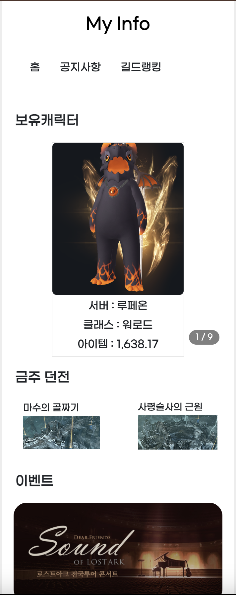
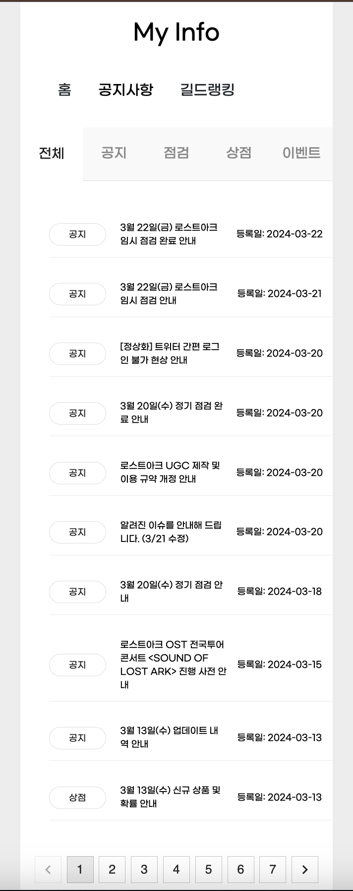
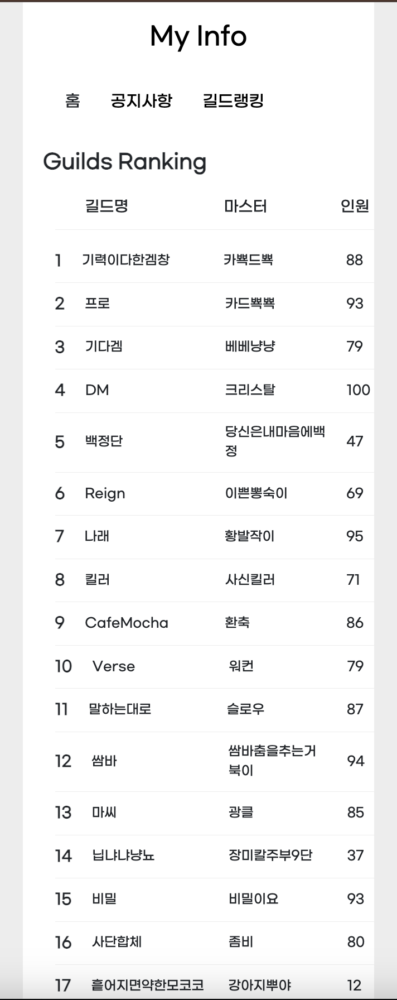

← 목록으로 돌아가기

LostArk-Open-API
LostARk - Open-API 사용한 웹페이지# SkeletonUI
# 스켈레톤
# 리액트
# Open-API
※ 사진을 누르시면 확대되어 보실수 있습니다.
  Project Reuslts.
이 프로젝트는 내가 좋아하는 게임인 로스트아크를 주제로 만들어서 더욱 즐거웠습니다.
Postman을 활용해 로스트아크 OpenAPI에서 데이터를 가져오고, 이를 JSON 형식으로 가공하여 React로 웹페이지에 동적으로 표시했습니다.
모바일 웹 형식으로 제작하여 사용자들이 휴대폰이나 브라우저를 통해 언제 어디서나 쉽게 정보를 확인할 수 있도록 구현했습니다.
반응형 작업이 필요 없는 모바일 전용 환경에서 완벽히 작동하도록 설계했으며, 사용자가 편리하게 데이터를 접근하고 확인할 수 있는 직관적인 UI를 제공했습니다.
좋아하는 게임으로 작업하면서 더욱 흥미롭게 프로젝트를 진행할 수 있었고, 유익한 개발 경험이 되었습니다.
Work Info.
- 제작 기간24.03.26 ~ 24.04.02
- 제작 영역LostARk 모든 영억
- 작업 환경MAC OS
- 사용 툴VSCODE
- 사용 툴JavaScript, HTML5, CSS3
- 깃허브https://github.com/bp4sp4/LostArk-Open-API